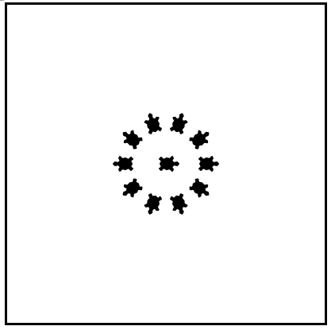

5.5. A Few More turtle Methods and Observations¶
Here are a few more things that you might find useful as you write programs that use turtles.
Turtle methods can use negative angles or distances. So
tess.forward(-100)will move tess backwards, andtess.left(-30)turns her to the right. Additionally, because there are 360 degrees in a circle, turning 30 to the left will leave you facing in the same direction as turning 330 to the right! (The on-screen animation will differ, though — you will be able to tell if tess is turning clockwise or counter-clockwise!)This suggests that we don’t need both a left and a right turn method — we could be minimalists, and just have one method. There is also a backward method. (If you are very nerdy, you might enjoy saying
alex.backward(-100)to move alex forward!)Reviewing a few basic facts about geometry and number lines, like we’ve done here is a good start if we’re going to play with turtles.
A turtle’s pen can be picked up or put down. This allows us to move a turtle to a different place without drawing a line. The methods are
upanddown. Note that the methodspenupandpendowndo the same thing.alex.up() alex.forward(100) # this moves alex, but no line is drawn alex.down()
Every turtle can have its own shape. The ones available “out of the box” are
arrow,blank,circle,classic,square,triangle,turtle.... alex.shape("turtle") ...
You can speed up or slow down the turtle’s animation speed. (Animation controls how quickly the turtle turns and moves forward). Speed settings can be set between 1 (slowest) to 10 (fastest). But if you set the speed to 0, it has a special meaning — turn off animation and go as fast as possible.
alex.speed(10)
A turtle can “stamp” its footprint onto the canvas, and this will remain after the turtle has moved somewhere else. Stamping works even when the pen is up.
Let’s do an example that shows off some of these new features.
If you are curious about how far the turtle is traveling each time the for loop iterates, you can add a print
statement inside of the for loop to print out the value of dist.
One more thing to be careful about. All except one of the shapes you see on the screen here are
footprints created by stamp. But the program still only has one turtle instance — can you
figure out which one is the real tess? (Hint: if you’re not sure, write a new line of code after the
for loop to change tess’ color, or to put her pen down and draw a line, or to change her shape, etc.)
Mixed up program
The following program uses the stamp method to create a circle of turtle shapes as shown to the left:
{kind=link}
But the lines are mixed up. The program should do all necessary set-up, create the turtle, set the shape to “turtle”, and pick up the pen. Then the turtle should repeat the following ten times: go forward 50 pixels, leave a copy of the turtle at the current position, reverse for 50 pixels, and then turn right 36 degrees. After the loop, set the window to close when the user clicks in it.
Drag the blocks of statements from the left column to the right column and put them in the right order with the correct indention. Click on Check Me to see if you are right. You will be told if any of the lines are in the wrong order or are incorrectly indented.
Mixed up program
The following program uses the stamp method to create a line of turtle shapes as shown to the left:

But the lines are mixed up. The program should do all necessary set-up, create the turtle, set the shape to “turtle”, and pick up the pen. Then the turtle should repeat the following three times: go forward 50 pixels and leave a copy of the turtle at the current position. After the loop, set the window to close when the user clicks in it.
Drag the blocks of statements from the left column to the right column and put them in the right order with the correct indention. Click on Check Me to see if you are right. You will be told if any of the lines are in the wrong order or are incorrectly indented.